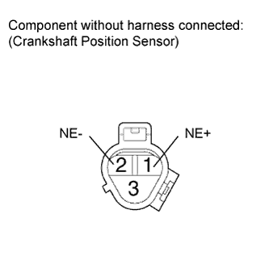
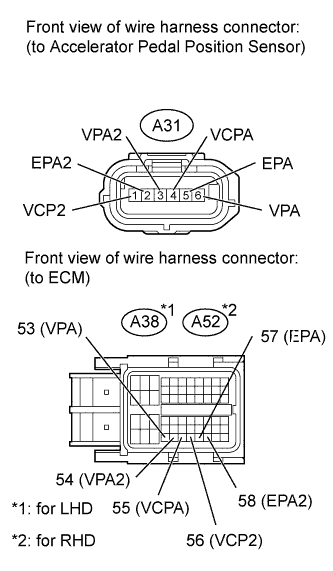
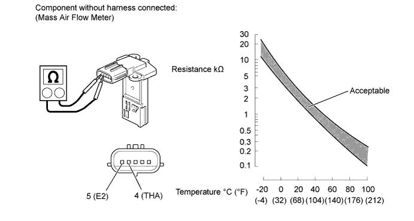

ECD SYSTEM > Black Smoke Emitted |
| 1.READ OUTPUT DTC (RELATED TO ENGINE) |
Connect the intelligent tester to the DLC3.
Turn the engine switch on (IG) and turn the tester on.
Enter the following menus: Powertrain / Engine / DTC.
Read the DTCs.
| Result | Proceed to |
| No DTC is output | A |
| DTCs related to the engine are output | B |
|
| ||||
| A | |
| 2.READ VALUE USING INTELLIGENT TESTER (INJECTION VOLUME AND INJECTION FEEDBACK VAL #1 TO #8) |
Connect the intelligent tester to the DLC3.
Start the engine and turn the tester on.
Enter the following menus: Powertrain / Engine / Data List.
Select the following menu items in order and read the values.
| Item | Engine Speed* | Reference Value |
| Injection Volume | Idling (No engine load) | 3.0 to 10 mm3/st |
| Injection Feedback Val #1 to #8 | Idling (No engine load) | -3.0 to 3.0 mm3/st |
|
| ||||
| OK | |
| 3.PERFORM ENGINE SPEED ACCELERATION |
Accelerate the engine to the maximum speed with no load 20 times.
Check the volume of black smoke in the exhaust gas.
| Result | Proceed to |
| Black smoke is not present | OK |
| Black smoke remains in the exhaust gas | NG |
|
| ||||
| OK | ||
| ||
| 4.CHECK INTAKE AIR CONTROL SYSTEM AND EXHAUST SYSTEM |
Inspect the engine condition (Click here).
|
| ||||
| OK | |
| 5.INSPECT MASS AIR FLOW METER |
Inspect the mass air flow meter (Click here).
|
| ||||
| OK | |
| 6.CHECK TURBOCHARGING PRESSURE |
Check the turbocharging pressure (Click here).
|
| ||||
| OK | |
| 7.READ VALUE USING INTELLIGENT TESTER (DATA LIST) |
Connect the intelligent tester to the DLC3.
Start the engine and turn the tester on.
Enter the following menus: Powertrain / Engine / Data List.
Select the following menu items in order and read the values.
| Item | Engine Speed* | Reference Value |
| Fuel Press | Idling | 27 to 37 MPa |
| Fuel Press | 2000 rpm (no engine load) | 50 to 70 MPa |
| Fuel Press | 3000 rpm (no engine load) | 52 to 76 MPa |
| Injection Volume | Idling | 3.0 to 10 mm3/st |
| Injection Volume | 2000 rpm (no engine load) | 3.5 to 11 mm3/st |
| Injection Volume | 3000 rpm (no engine load) | 6.5 to 13 mm3/st |
| Main Injection Period | Idling | 430 to 730 μs |
| Pilot 2 Injection Period | Idling | 390 to 490 μs |
| Injection Feedback Val #1 to #8 | Idling | -3.0 to 3.0 mm3
|
| Result | Proceed to |
| Within reference value | A |
| One of Injection Feedback Val #1 to #8 is not within reference value | B |
| Other result | C |
|
| ||||
|
| ||||
| A | |
| 8.CHECK CYLINDER COMPRESSION PRESSURE |
Check the cylinder compression pressure (Click here).
|
| ||||
| OK | |
| 9.CHECK HARNESS AND CONNECTOR (FUEL INJECTOR - EDU) |
  |
Disconnect the fuel injector connectors.
Disconnect the No. 1 EDU connector.
Measure the resistance according to the value(s) in the table below.
| Tester Connection | Condition | Specified Condition |
| C5-2 - C74-4 (INJ1) | Always | Below 1 Ω |
| C14-2 - C74-3 (INJ4) | Always | Below 1 Ω |
| C69-2 - C74-2 (INJ6) | Always | Below 1 Ω |
| C68-2 - C74-1 (INJ7) | Always | Below 1 Ω |
| C5-1 - C74-5 (COM1) | Always | Below 1 Ω |
| C14-1 - C74-5 (COM1) | Always | Below 1 Ω |
| C69-1 - C74-6 (COM2) | Always | Below 1 Ω |
| C68-1 - C74-6 (COM2) | Always | Below 1 Ω |
| Tester Connection | Condition | Specified Condition |
| C5-2 or C74-4 (INJ1) - Body ground | Always | 10 kΩ or higher |
| C14-2 or C74-3 (INJ4) - Body ground | Always | 10 kΩ or higher |
| C69-2 or C74-2 (INJ6) - Body ground | Always | 10 kΩ or higher |
| C68-2 or C74-1 (INJ7) - Body ground | Always | 10 kΩ or higher |
| C5-1 or C74-5 (COM1) - Body ground | Always | 10 kΩ or higher |
| C14-1 or C74-5 (COM1) - Body ground | Always | 10 kΩ or higher |
| C69-1 or C74-6 (COM2) - Body ground | Always | 10 kΩ or higher |
| C68-1 or C74-6 (COM2) - Body ground | Always | 10 kΩ or higher |
Disconnect the fuel injector connectors.
Disconnect the No. 2 EDU connector.
Measure the resistance according to the value(s) in the table below.
| Tester Connection | Condition | Specified Condition |
| C70-2 - C76-4 (INJ2) | Always | Below 1 Ω |
| C9-2 - C76-3 (INJ5) | Always | Below 1 Ω |
| C67-2 - C76-1 (INJ3) | Always | Below 1 Ω |
| C54-2 - C76-2 (INJ8) | Always | Below 1 Ω |
| C70-1 - C76-5 (COM4) | Always | Below 1 Ω |
| C9-1 - C76-5 (COM4) | Always | Below 1 Ω |
| C67-1 - C76-6 (COM5) | Always | Below 1 Ω |
| C54-1 - C76-6 (COM5) | Always | Below 1 Ω |
| Tester Connection | Condition | Specified Condition |
| C70-2 or C76-4 (INJ2) - Body ground | Always | 10 kΩ or higher |
| C9-2 or C76-3 (INJ5) - Body ground | Always | 10 kΩ or higher |
| C67-2 or C76-1 (INJ3) - Body ground | Always | 10 kΩ or higher |
| C54-2 or C76-2 (INJ8) - Body ground | Always | 10 kΩ or higher |
| C70-1 or C76-5 (COM4) - Body ground | Always | 10 kΩ or higher |
| C9-1 or C76-5 (COM4) - Body ground | Always | 10 kΩ or higher |
| C67-1 or C76-6 (COM5) - Body ground | Always | 10 kΩ or higher |
| C54-1 or C76-6 (COM5) - Body ground | Always | 10 kΩ or higher |
|
| ||||
| OK | |
| 10.PERFORM ACTIVE TEST USING INTELLIGENT TESTER (CONTROL THE CYLINDER FUEL CUT) |
Connect the intelligent tester to the DLC3.
Start the engine and turn the tester on.
Enter the following menus: Powertrain / Engine / Active Test / Control the Cylinder #1, #2, #3, #4, #5, #6, #7 and #8 Fuel Cut.
Check the engine idling condition while the fuel injection of each cylinder is cut using the tester.
| Engine Idling Condition | Proceed to |
| Becomes unstable | A |
| Does not change | B |
|
| ||||
| A | ||
| ||
| 11.READ VALUE USING INTELLIGENT TESTER (COOLANT TEMP) |
Connect the intelligent tester to the DLC3.
Turn the engine switch on (IG) and turn the tester on.
Start the engine and warm it up.
Enter the following menus: Powertrain / Engine / Data List / Coolant Temp.
Read the value.
| Item | Inspection Condition | Reference Value |
| Coolant Temp | Idling with warm engine (A/C switch off) | 75 to 90°C (167 to 194°F) |
|
| ||||
| OK | |
| 12.READ VALUE USING INTELLIGENT TESTER (MAP) |
Connect the intelligent tester to the DLC3.
Turn the engine switch on (IG) and turn the tester on.
Start the engine and warm it up.
Enter the following menus: Powertrain / Engine / Data List / MAP.
Read the value.
|
| ||||
| OK | |
| 13.READ VALUE USING INTELLIGENT TESTER (ENGINE SPEED) |
Connect the intelligent tester to the DLC3.
Turn the engine switch on (IG) and turn the tester on.
Enter the following menus: Powertrain / Engine / Data List / Engine Speed.
Read the value.
| Item | Inspection Condition | Reference Value |
| Engine Speed | Idling with warm engine (A/C switch off) |
|
|
| ||||
| OK | |
| 14.READ VALUE USING INTELLIGENT TESTER (ACCEL POSITION 1 AND 2) |
Connect the intelligent tester to the DLC3.
Turn the engine switch on (IG) and turn the tester on.
Enter the following menus: Powertrain / Engine / Data List / Accel Position 1 and Accel Position 2.
Read the value.
| Tester Display | Accelerator Pedal Condition | Specified Condition |
| Accel Position 1 | Released | 0.6 to 1.0 V |
| Accel Position 1 | Depressed | 3.4 to 3.8 V |
| Accel Position 2 | Released | 1.4 to 1.8 V |
| Accel Position 2 | Depressed | 4.2 to 4.6 V |
|
| ||||
| OK | |
| 15.READ VALUE USING INTELLIGENT TESTER (INTAKE AIR) |
Connect the intelligent tester to the DLC3.
Turn the engine switch on (IG) and turn the tester on.
Enter the following menus: Powertrain / Engine / Data List / Inlet Air.
Read the value.
|
| ||||
| OK | |
| 16.READ VALUE USING INTELLIGENT TESTER (FUEL PRESS) |
Connect the intelligent tester to the DLC3.
Turn the engine switch on (IG) and turn the tester on.
Start the engine and warm it up.
Enter the following menus: Powertrain / Engine / Data List / Fuel Press.
Read the value.
| Item | Inspection Condition | Reference Value |
| Fuel Press | Idling | 27 to 37 MPa |
|
| ||||
| OK | ||
| ||
| 17.INSPECT ENGINE COOLANT TEMPERATURE SENSOR |
Inspect the engine coolant temperature sensor (Click here).
|
| ||||
| OK | ||
| ||
| 18.CHECK HARNESS AND CONNECTOR (MANIFOLD ABSOLUTE PRESSURE SENSOR - ECM) |
 |
Disconnect the manifold absolute pressure sensor connector.
Disconnect the ECM connector.
Measure the resistance according to the value(s) in the table below.
| Tester Connection | Condition | Specified Condition |
| C80-2 (PIM) - C45-114 (PIM) | Always | Below 1 Ω |
| C80-3 (VC) - C45-66 (VCPM) | Always | Below 1 Ω |
| C80-1 (E) - C45-75 (E2) | Always | Below 1 Ω |
| Tester Connection | Condition | Specified Condition |
| C80-2 (PIM) - C46-114 (PIM) | Always | Below 1 Ω |
| C80-3 (VC) - C46-66 (VCPM) | Always | Below 1 Ω |
| C80-1 (E) - C46-75 (E2) | Always | Below 1 Ω |
| Tester Connection | Condition | Specified Condition |
| C80-2 (PIM) or C45-114 (PIM)) - Body ground | Always | 10 kΩ or higher |
| C80-3 (VC) or C45-66 (VCPM) - Body ground | Always | 10 kΩ or higher |
| C80-1 (E) or C45-75 (E2) - Body ground | Always | 10 kΩ or higher |
| Tester Connection | Condition | Specified Condition |
| C80-2 (PIM) or C46-114 (PIM)) - Body ground | Always | 10 kΩ or higher |
| C80-3 (VC) or C46-66 (VCPM) - Body ground | Always | 10 kΩ or higher |
| C80-1 (E) or C46-75 (E2) - Body ground | Always | 10 kΩ or higher |
|
| ||||
| OK | ||
| ||
| 19.INSPECT CRANKSHAFT POSITION SENSOR |
 |
Disconnect the crankshaft position sensor connector.
Measure the resistance according to the value(s) in the table below.
| Tester Connection | Condition | Specified Condition |
| 1 (NE+) - 2 (NE-) | Cold | 1630 to 2740 Ω |
| 1 (NE+) - 2 (NE-) | Hot | 2065 to 3225 Ω |
|
| ||||
| OK | ||
| ||
| 20.CHECK HARNESS AND CONNECTOR (ACCELERATOR PEDAL POSITION SENSOR - ECM) |
 |
Disconnect the accelerator pedal position sensor connector.
Disconnect the ECM connector.
Measure the resistance according to the value(s) in the table below.
| Tester Connection | Condition | Specified Condition |
| A31-1 (VCP2) - A38-56 (VCP2) | Always | Below 1 Ω |
| A31-2 (EPA2) - A38-58 (EPA2) | Always | Below 1 Ω |
| A31-3 (VPA2) - A38-54 (VPA2) | Always | Below 1 Ω |
| A31-4 (VCPA) - A38-55 (VCPA) | Always | Below 1 Ω |
| A31-5 (EPA) - A38-57 (EPA) | Always | Below 1 Ω |
| A31-6 (VPA) - A38-53 (VPA) | Always | Below 1 Ω |
| Tester Connection | Condition | Specified Condition |
| A31-1 (VCP2) - A52-56 (VCP2) | Always | Below 1 Ω |
| A31-2 (EPA2) - A52-58 (EPA2) | Always | Below 1 Ω |
| A31-3 (VPA2) - A52-54 (VPA2) | Always | Below 1 Ω |
| A31-4 (VCPA) - A52-55 (VCPA) | Always | Below 1 Ω |
| A31-5 (EPA) - A52-57 (EPA) | Always | Below 1 Ω |
| A31-6 (VPA) - A52-53 (VPA) | Always | Below 1 Ω |
| Tester Connection | Condition | Specified Condition |
| A31-1 (VCP2) or A38-56 (VCP2) - Body ground | Always | 10 kΩ or higher |
| A31-2 (EPA2) or A38-58 (EPA2) - Body ground | Always | 10 kΩ or higher |
| A31-3 (VPA2) or A38-54 (VPA2) - Body ground | Always | 10 kΩ or higher |
| A31-4 (VCPA) or A38-55 (VCPA) - Body ground | Always | 10 kΩ or higher |
| A31-5 (EPA) or A38-57 (EPA) - Body ground | Always | 10 kΩ or higher |
| A31-6 (VPA) or A38-53 (VPA) - Body ground | Always | 10 kΩ or higher |
| Tester Connection | Condition | Specified Condition |
| A31-1 (VCP2) or A52-56 (VCP2) - Body ground | Always | 10 kΩ or higher |
| A31-2 (EPA2) or A52-58 (EPA2) - Body ground | Always | 10 kΩ or higher |
| A31-3 (VPA2) or A52-54 (VPA2) - Body ground | Always | 10 kΩ or higher |
| A31-4 (VCPA) or A52-55 (VCPA) - Body ground | Always | 10 kΩ or higher |
| A31-5 (EPA) or A52-57 (EPA) - Body ground | Always | 10 kΩ or higher |
| A31-6 (VPA) or A52-53 (VPA) - Body ground | Always | 10 kΩ or higher |
|
| ||||
| OK | ||
| ||
| 21.INSPECT INTAKE AIR TEMPERATURE SENSOR |
Remove the mass air flow meter (Click here).

Measure the resistance according to the value(s) in the table below.
| Tester Connection | Condition | Specified Condition |
| 4 - 5 | -20°C (-4°F) | 13.6 to 18.4 kΩ |
| 20°C (68°F) | 2.21 to 2.69 kΩ | |
| 60°C (140°F) | 0.49 to 0.67 kΩ |
|
| ||||
| OK | ||
| ||
| 22.INSPECT COMMON RAIL (for Bank 1) (FUEL PRESSURE SENSOR) |
Inspect the fuel pressure sensor (Click here).
|
| ||||
| OK | |
| 23.CHECK HARNESS AND CONNECTOR (FUEL PRESSURE SENSOR - ECM) |
 |
Disconnect the fuel pressure sensor connector.
Disconnect the ECM connector.
Measure the resistance according to the value(s) in the table below.
| Tester Connection | Condition | Specified Condition |
| C82-2 (PR) - C45-69 (PCR1) | Always | Below 1 Ω |
| C82-3 (VC) - C45-70 (VCM) | Always | Below 1 Ω |
| C82-1 (E2) - C45-75 (E2) | Always | Below 1 Ω |
| Tester Connection | Condition | Specified Condition |
| C82-2 (PR) - C46-69 (PCR1) | Always | Below 1 Ω |
| C82-3 (VC) - C46-70 (VCM) | Always | Below 1 Ω |
| C82-1 (E2) - C46-75 (E2) | Always | Below 1 Ω |
| Tester Connection | Condition | Specified Condition |
| C82-2 (PR) or C45-69 (PCR1) - Body ground | Always | 10 kΩ or higher |
| C82-3 (VC) or C45-70 (VCM) - Body ground | Always | 10 kΩ or higher |
| C82-1 (E2) or C45-75 (E2) - Body ground | Always | 10 kΩ or higher |
| Tester Connection | Condition | Specified Condition |
| C82-2 (PR) or C46-69 (PCR1) - Body ground | Always | 10 kΩ or higher |
| C82-3 (VC) or C46-70 (VCM) - Body ground | Always | 10 kΩ or higher |
| C82-1 (E2) or C46-75 (E2) - Body ground | Always | 10 kΩ or higher |
|
| ||||
| OK | |
| 24.REPLACE ECM |
Replace the ECM (Click here).
Check if the engine starts smoothly or if the engine stalls.
|
| ||||
| OK | ||
| ||